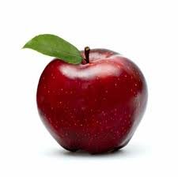

Яблоко

Яблоки — это крайне полезный продукт, богатый витаминами (C, группа B), калием, пектином и антиоксидантами,
которые укрепляют иммунитет,
улучшают работу сердца и пищеварения.
Клетчатка обеспечивает сытость, а низкая калорийность делает их идеальным диетическим перекусом,
помогая снижать «плохой» холестерин.